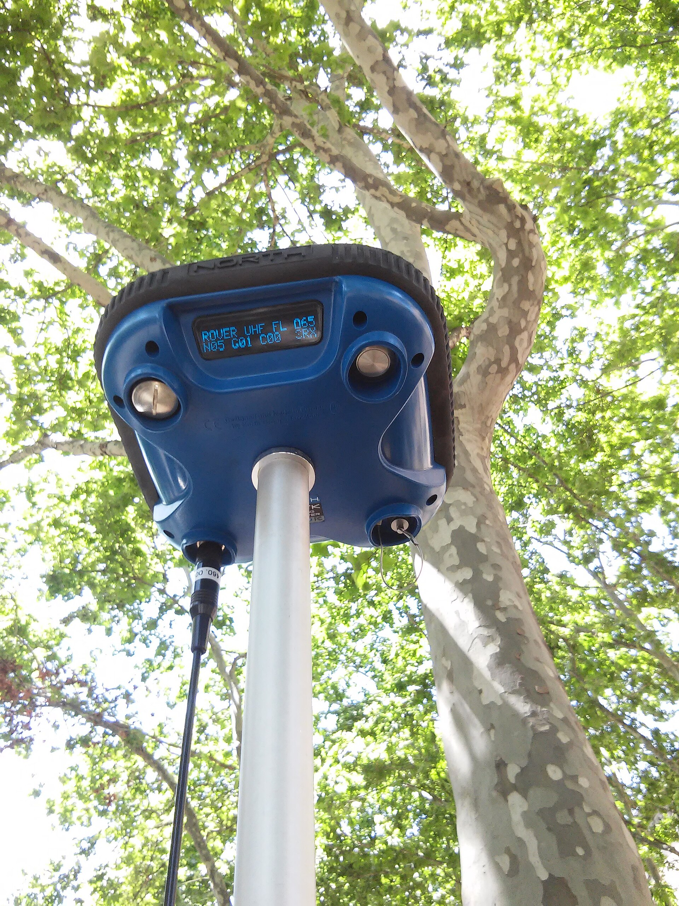

Digital Mensuration
and Data Management
Field data → validation → cleaning → analysis → storage → interpretation.
Royal University of Bhutan
they do not replace one.
A reliable dataset is a chain of custody
Unit IX
- Explain GNSS, coordinates, waypoint, track, datum and positional accuracy.
- Record and navigate to plot locations using good field practice.
- Compare digital and traditional measurement instruments.
- Design a validated mobile tree-measurement form.
- Structure one row per tree with stable identifiers and units.
- Detect missing values, impossible values, outliers and duplicates.
- Calculate, summarize, graph, document and back up inventory data.
- Complete Practicals 10 and 12 and interpret quality limitations.
GPS and GNSS applications
Record where a plot is, navigate back to it and document the accuracy—without turning an undergraduate mensuration unit into a geodesy course.
Several satellites locate one receiver
Unit IX

Bernardoespinosa · CC BY-SA 4.0{kind=link}
Global Navigation Satellite System: the general term for satellite constellations and services used to determine position.
The United States GPS is one GNSS constellation. A modern receiver may use GPS and other constellations.
Record the receiver’s stated accuracy/uncertainty, time and coordinate reference—not only the coordinate digits.
A coordinate without its system is incomplete
Unit IX
Latitude measures north/south; longitude east/west. Record format and hemisphere. Never mix decimal degrees with degrees-minutes-seconds.
Useful for mapping distances and areas, but the coordinate reference system and zone are essential.
Reference model and origin used to position coordinates on Earth.
Saved point such as plot centre, access junction or hazard.
Time-ordered series of positions representing a route or boundary walk.
Minimum plot-location record: Plot_ID · latitude/longitude or Easting/Northing · coordinate format · datum/CRS · receiver · stated accuracy · date/time · observer.
Use GNSS to document and relocate
Unit IX
Allow receiver to stabilize; use averaging if the protocol/device supports it; save with Plot_ID.
Load planned waypoints; follow map/bearing safely; approach without shifting the selected centre.
Record access route with an appropriate interval; note gaps and pauses; avoid interpreting every wobble as movement.
Walk and record a simple boundary where suitable; close it; inspect shape; boundary survey precision may require specialist methods.
GNSS guides you to a selected plot; it does not authorize moving the plot to the location where the displayed point appears most stable.
The last decimal is not the same as accuracy
Unit IX
- Geometry: satellites clustered in one part of sky weaken position.
- Signal and clock/orbit corrections affect the solution.
- Too few usable signals reduce reliability.
- Canopy: blocks and weakens signals.
- Terrain: ridges/slopes block sky view.
- Multipath: reflected signals travel longer routes.
- Wrong datum/CRS or coordinate format.
- Insufficient stabilization or inconsistent antenna position.
- Wrong Plot_ID or overwritten waypoint.
Confirm settings; maximize sky view without relocating the plot; hold consistently; wait/average where supported; repeat and compare; record displayed accuracy and limitations.
Do not invent precision, omit the datum, average coordinates collected in different systems, or “correct” a planned centre by eye.
Modern measurement instruments
Faster readouts and digital storage can reduce some errors, but calibration, measurement geometry and professional judgement remain essential.
Digital does not mean self-validating
Unit IX
| Instrument | Variable measured | Main advantage | Main limitation | Quality-control requirement |
|---|---|---|---|---|
| Laser rangefinder | Slope/horizontal distance; sometimes angles | Rapid non-contact distance | Wrong target; foliage interception | Known-distance check; verify target and mode |
| Digital hypsometer | Tree height from distance/angles or laser functions | Fast calculation and stored readings | Top/base sighting and leaning-tree errors remain | Check method, distance and repeatability |
| Digital calliper | Stem diameter | Electronic readout/data transfer | Battery, zero drift, pressure and orientation | Zero/known-diameter checks; prescribed directions |
| Digital compass | Azimuth/bearing; sometimes inclination | Clear reading and integration | Magnetic interference; wrong declination setting | Calibrate; separate from metal/electronics |
| GRS crown densitometer | Canopy cover by vertical tally/non-tally observations | Simple line-intercept observation used in Bhutan protocols | Level/sighting and >50% tally judgement affect readings | Level bubbles; fixed points; documented 1/0 rule |
| Spherical densiometer | Canopy closure from reflected grid | Compact general comparison instrument | Orientation, level and grid interpretation | Follow its own directions and tally protocol |
Instrument roles: under the Forest Canopy Cover Assessment Guidelines 2024 (FMID, DoFPS), the GRS crown densitometer is prescribed; the spherical densiometer is retained as a comparative instrument. Do not interchange Bhutan protocols: the Second NFI used 25 GRS observations per 500 m² plot, at predefined 4.2 m intervals in eight cardinal directions. The 2024 SRFL canopy guideline requires 100 readings per 500 m² plot (89 systematic + 11 random). In both, record 1 when more than 50% of the inner black circle is covered by canopy; otherwise record 0.
Trust comes from a checkable instrument history
Unit IX
Inspect case/lens/jaws; charge batteries; synchronize time; confirm units, datum and modes; test against known references.
Protect from rain, dust, shock and extreme heat; keep optical surfaces clean; record instrument ID; repeat doubtful readings.
Dry and clean; download and verify records; recharge/remove batteries as appropriate; log faults and maintenance.
Follow manufacturer/protocol instructions. A field check confirms function; it is not necessarily a formal laboratory calibration.
Compare a subset of readings with a tape, known distance, manual compass or established height method. Investigate systematic differences.
Instrument model/ID, settings, check result, date and any corrective action belong in the metadata or equipment log.
Mobile data collection
Move error prevention closer to measurement: structured identifiers, code lists, range checks, logic and immediate review.
Design the form around the measurement protocol
Unit IX
- Define entities: inventory → plot → tree.
- Give each entity a stable, unique ID.
- Choose field name, type, unit and allowed values.
- Separate coded values from display labels.
- Add required, range, cross-field and uniqueness checks.
- Prototype with realistic cases and field staff.
- Version, deploy, test offline and document.
- Short, stable and unambiguous: PIWA for Pinus wallichiana only if defined in a code list.
- Do not embed changing descriptions inside IDs.
- Use leading zeros consistently if they are part of the code.
- Keep “unknown” distinct from blank and from “not measured”.
- Store labels in a data dictionary; never rely on memory.
Validation should block impossible entries and warn about unusual but possible ones. A 95 cm tree may be real; a 950 cm DBH is more likely a unit or keying error.
Every field has a type, unit and rule
Unit IX
| Field | Type / unit | Example | Validation or design rule |
|---|---|---|---|
| Plot_ID | text | P01 | required; selected from assignment list |
| Tree_ID | text | T03 | required; unique within Plot_ID |
| Species | code list | QUGR | required; approved list + “unknown—specimen/photo” workflow |
| DBH_cm | decimal · cm | 22.6 | required; positive; protocol range; unusual-value warning |
| DBH_ref_height_m | decimal · m | 1.37 | required; fixed per protocol, recorded once, not typed per tree |
| Height_m | decimal · m | 16.4 | positive; allow documented not-measured code if protocol permits |
| Crown_Class | choice | codominant | fixed definitions in help text |
| Defect | multi-choice / code | fork | show details only when defect present (skip logic) |
| Latitude / Longitude | coordinate | captured at plot level | capture once per plot; record accuracy |
| Observer · Date | user / date | crew01 · 2026-08-08 | auto-fill where appropriate; allow verified correction |
| Remarks | text | buttress; DBH at marked point | optional context, not a substitute for coded fields |
Prevent, warn, explain—then review
Unit IX
Plot_ID, Tree_ID, species and DBH cannot be silently blank.
DBH > 0; warning outside plausible protocol range; height consistent with method.
Species, crown and defect values selected from controlled lists.
Block duplicate Plot_ID + Tree_ID, not merely duplicate Tree_ID across all plots.
Ask defect type only if defect = yes.
Top height should not be below crown-base height.
Coordinate, timestamp, observer and form version.
Assignment lists and repeat groups with uniqueness constraints.
A validation rule documents an expected condition. Keep thresholds visible in the form specification or data dictionary; never bury unexplained constants in code.
Choose the platform after the protocol
Unit IX
General-purpose form design and field collection, including offline workflows depending on setup.
Forestry-oriented survey systems. Bhutan’s Second NFI used Collect Mobile and Collect.
Open tools for mobile forms; XLSForm supports required fields, constraints and logic.
Institutional GIS/mobile applications or supported custom databases may be appropriate.
Training/field inspection with immediate crew feedback.
QA/QC remeasurement without the original crew, using its data as reference.
Independent remeasurement without original crew or access to its data.
Spreadsheet-based data management
One row per observational unit, one variable per column, explicit units, stable identifiers and an unchanged raw dataset.
A spreadsheet is a small database
Unit IX
| Plot 1 — Trees and notes | |||
| Tree | Species & DBH | Height | summary |
| 1 | Pw 28.4cm | 19.2 m | mean? |
| Q? / twenty-two | - | ||
| Plot 2 begins here… | |||
- Merged cells and multiple tables.
- Variables and units combined.
- Blank identifiers and unclear codes.
- Summary mixed into raw records.
| Plot_ID | Tree_ID | Species | DBH_cm | Height_m |
|---|---|---|---|---|
| P01 | T01 | PIWA | 28.4 | 19.2 |
| P01 | T02 | PIWA | 34.7 | 22.1 |
| P01 | T03 | QUGR | 22.6 | 16.4 |
- One row per tree; one variable per column.
- Consistent units in column names/metadata.
- Unique Plot_ID + Tree_ID.
- Separate raw, cleaned, lookup and summary sheets.
An unusual value is a question, not a deletion
Unit IX
- Blank may mean not measured, not applicable, unknown or lost—these differ.
- Use documented codes only where software/statistics will interpret them correctly.
- Never replace unknown values with zero.
- Check original record, units, species, method and field remarks.
- Compare biologically related fields: DBH, height and crown.
- Retain real extreme trees; correct only with evidence.
- Decimal shift: 22.6 → 226.
- Unit mix: 19.2 m entered as 1920 cm in an m column.
- Transposition: 34.7 → 43.7.
- Copy/paste or duplicate row.
| Raw value | Flag | Evidence checked | Cleaned value | Change note |
|---|---|---|---|---|
| DBH 226 cm | outside teaching check range | paper sheet = 22.6 cm | 22.6 | decimal error; corrected by AB, 2026-08-08 |
| Height blank | required in this protocol | no field value | blank | not imputed; excluded from mean height; reported missing |
Cleaning must be reproducible: preserve raw data, make the correction in a working copy, and document who changed what, why and when.
Derived variables should be auditable
Unit IX
- Summary table: count, mean DBH/height, G/ha and V/ha by plot/species.
- Histogram: DBH class distribution.
- Bar chart: basal area by species.
- Scatter plot: height versus DBH; inspect, do not imply causation automatically.
- Every graph needs title, axis labels, units and sample context.
Backup: at least two copies on different media/locations; verify files open; use dated/versioned names; protect sensitive coordinates and access.
Eleven steps from raw file to defensible result
Unit IX
Preserve raw data.
Check units.
Make working copy.
Calculate derived variables.
Check identifiers.
Summarise and graph.
Check missing values.
Document changes.
Check impossible values.
Back up and verify.
Check duplicates.
Field name, definition, entity, type, unit, allowed values/codes, missing-value convention, derivation and source protocol.
Record ID, field, old value, new value, evidence/reason, editor and timestamp.
Purpose, population, design, collection dates, file structure, software/version, known issues, ownership and contact.
Flags prompt review; they do not rewrite evidence
Unit IX
| Plot_ID | Tree_ID | Species | DBH cm | Height m |
|---|---|---|---|---|
| P01 | T01 | PIWA | 28.4 | 19.2 |
| P01 | T02 | PIWA | 34.7 | |
| P01 | T03 | QUGR | 226 | 16.4 |
| P01 | T04 | QUGR | 41.2 | 23.5 |
| P01 | T04 | QUGR | 41.2 | 23.5 |
| P01 | T05 | TSDU | 31.5 | 20.8 |
- Missing Height_m for P01-T02.
- DBH 226 cm for P01-T03 is unusual; compare with field sheet before editing.
- P01-T04 appears twice; determine which record is authoritative.
A checker reports potential problems. Only evidence—field sheet, photo, remeasurement or protocol—supports a correction.
Build, test, clean, analyse and hand over
Unit IX
- Create plot/tree/species codes.
- Build digital or spreadsheet form.
- Set types, units, required fields, ranges and lists.
- Test offline and with boundary cases.
- Enter the Unit VIII measurements.
- Find missing values, duplicates and outliers.
- Verify against source record.
- Calculate basal area, volume and stand variables.
- Create species summary and DBH-class table.
- Prepare two appropriate graphs.
- Interpret stocking and composition.
- State limitations and unresolved flags.
- Preserve raw and cleaned files.
- Complete dictionary and change log.
- Back up; reopen and verify copies.
Raw dataset · cleaned dataset · data dictionary · change log · formula-driven summaries · two graphs · one-page interpretation · backup note.
Repeat coordinates and explain why they differ
Unit IX
- Configure coordinate format, datum/CRS, units and time.
- Record a known waypoint with receiver metadata.
- Save named plot-centre waypoints.
- Navigate to assigned waypoints safely.
- Record an access track and simple boundary.
- Repeat one coordinate under open sky and canopy.
- Export/save records without overwriting originals.
| Observation | Record |
|---|---|
| Configuration | format · datum/CRS · units |
| Waypoint | ID · coordinates · time · accuracy |
| Repeat | distance/direction between positions |
| Conditions | sky view · canopy · slope · weather |
| Track/boundary | interval · gaps · closure · plausibility |
- Which factor best explains spread?
- Is repeatability the same as accuracy?
- Would these coordinates relocate a plot? Map a legal boundary?
Digital quality remains a human responsibility
Unit IX
- GNSS positions require reference system and accuracy metadata.
- Digital tools still depend on geometry, calibration and protocol.
- Forms should prevent impossible values and warn on unusual ones.
- One row per tree; one variable per column; stable IDs and units.
- Clean with evidence and a change log.
- Raw · cleaned · dictionary · README · backup form one data package.
Sources and current documentation
Unit IX
- DoFPS (2023). Second NFI, Volume I. Open Foris/Android collection, redundant storage, data management, QA/QC and 25-reading GRS protocol.
- DoFPS (2024). Forest Canopy Cover Assessment Guidelines. GRS crown densitometer and 100-reading SRFL protocol.
- FAO. National Forest Inventory Field Manual template.
- Kershaw et al. (2017). Forest Mensuration, 5th ed.
- Broman & Woo (2018). Data Organization in Spreadsheets. The American Statistician, 72(1), 2–10.
- Open Foris. Collect and Arena documentation: survey structure, code lists and validation.
- ODK. Form logic and constraints.
- KoboToolbox. Official help centre.
- Instrument-specific calibration, accuracy and care instructions must come from the actual manufacturer manual and governing field protocol.
Next: Unit X uses documented equations and conversion factors to turn checked tree measurements into biomass, carbon and CO₂-equivalent estimates.